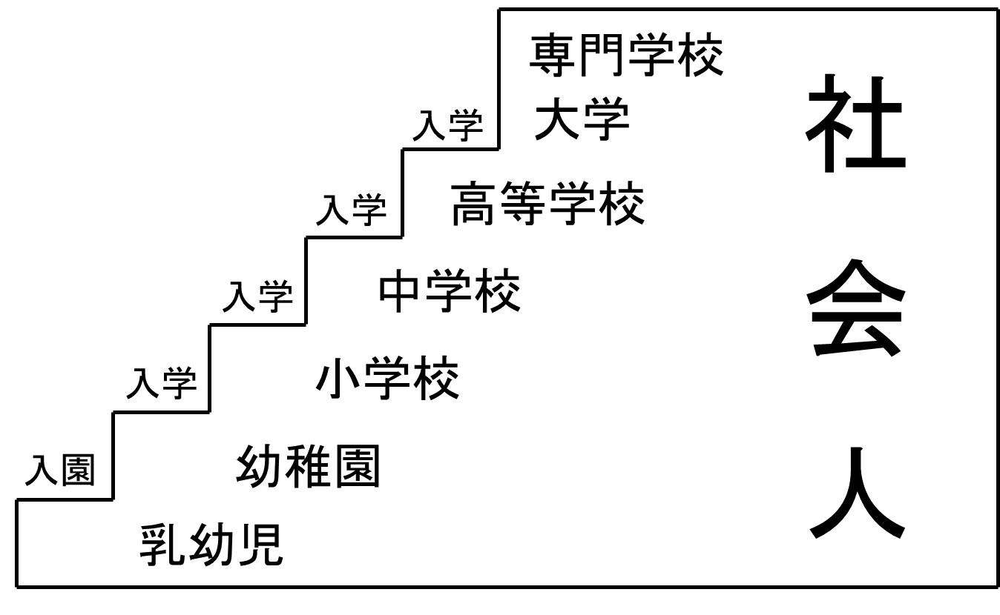

「さっそく子育ての森」へ行ってみましょう。
最初に目に飛び込んできた大きな木。
それは“人って何でしょう？”という問いかけの木です。大きな木です。
それは“人って何でしょう？”という問いかけの木です。大きな木です。
人、みな社会人（その１）

人、みな社会人（その２）
- 乳幼児から大学生、全て社会人。 家族も全員社会人。
- 現在は輪切り教育。 入学ー卒業、入学ー卒業、で輪切りされていく。私達の意識で変えましょう。入学、入学、入学、・・・だけでよいのでは？先生方も輪切りの壁を越えましょう。
人、みな社会人（その３）
- 乳幼児から大学生、みな社会人です。動物の世界でヒトは最も社会的な動物とされていることを思い出しましょう。この意味でヒトは誕生直後から社会人です。
- ヒトの赤ん坊における誕生直後の自発的微笑（意味もなく笑っているように見える微笑）は社会参入への赤ちゃんからの最初の働きかけです。
“こんにちは”という挨拶なのですね。
人、みな社会人（その４）
- “人間”という言葉の意味は、もともと“世の中”あるいは“世間”であって、“一人ぼっち”ではなく集合を意味していますよね。
この観点からも誕生直後からヒトはミルクを飲んで肉体的に成長していく、“一人ぼっち”、ではなく“社会人”として生きていかねばならないのです。
- 人みな、その存在は、複数のヒトとしてのみ意味があるのです。
人、みな社会人. 家族も社会人
―――― 家訓のいくつかを紹介（順不同） ――――
- “あいさつ”を守りましょう。
- 家の中でも“身だしなみ”は大切。
- “夫婦げんか”は子供の前では御法度。
- “明日から三連休!!”などと言って、手放しで喜ぶことも御法度。「学校、勤務先も楽しい所。三日間、学校や仕事をお留守にするのも寂しいな。でも、せっかくの連休だ。有意義に楽しむぞ！」でやりましょう。
- 勤務先には毎朝元気にでかける （家族に仕事の上での悩みを聞いてもらったりするが、朝になると元気いっぱいででかけます）。
- お母さんが、手間暇（ひま）かけ、心をこめて作った晩ごはん。“美味しい！”と言って食べましょうね（テレビ視聴はなるべく控えましょう）。
- お母さんも一層張切って美味しいごはんを用意してくれます！“美味しい”と言って食べると好き嫌いがなくなります。
- ほかにもいろいろ・・・・